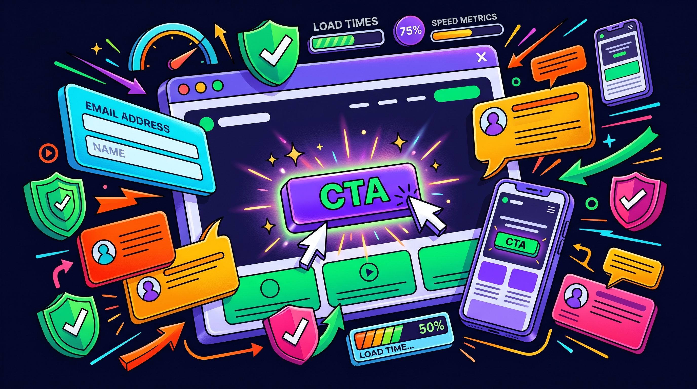

La mayoría de negocios en República Dominicana hacen marketing desconectado. Publican en Instagram por un lado, corren ads por otro, responden WhatsApp cuando pueden y rezan para que los clientes lleguen. Eso no es un sistema — es un accidente esperando pasar. Un embudo de ventas conecta todas las piezas en una máquina que genera leads, los nutre automáticamente y los convierte en clientes. Esta guía te enseña cómo armar el tuyo paso a paso.
Si ya leíste sobre cómo hacer Meta Ads y por qué necesitas un CRM, este artículo es el pegamento que une todo. El embudo es el sistema completo — los ads, la landing, el CRM y el seguimiento por WhatsApp son las piezas.
Las 4 etapas de un embudo de ventas
(Ads/SEO)
(Landing)
(CRM/WA)
(Venta)
Qué Es un Embudo de Ventas y Por Qué Tu Negocio Lo Necesita
Un embudo de ventas es un sistema diseñado para guiar a una persona desde que descubre tu negocio hasta que compra — de forma predecible y, en gran parte, automática. Se llama "embudo" porque entra mucha gente arriba (ven tu anuncio) y sale menos abajo (compran), pero cada etapa está diseñada para maximizar cuántos pasan al siguiente nivel.
Sin embudo, dependes de tres cosas poco confiables: que alguien te encuentre por casualidad, que te escriba por iniciativa propia, y que tú tengas tiempo de responder bien. Con embudo, el sistema hace el trabajo pesado: atrae gente con publicidad, captura sus datos con una landing page, les da seguimiento automático y los prepara para comprar.
La diferencia es brutal. Un negocio sin embudo convierte el 1-2% de las personas que lo ven en clientes. Un negocio con embudo bien optimizado convierte el 5-15%. Con los mismos ads, el mismo presupuesto, el mismo producto — simplemente un sistema más inteligente.
Las 4 Etapas de un Embudo de Ventas que Realmente Funciona
Todo embudo tiene 4 etapas. No importa si vendes servicios de consultoría, comida o cursos online — la estructura es la misma. Lo que cambia es el contenido de cada etapa.
Etapa 1: Atraer. Aquí pones tu negocio frente a las personas correctas. Los dos canales principales son Meta Ads (resultados rápidos) y SEO (resultados a largo plazo). El objetivo no es vender todavía — es generar curiosidad y clic. Un buen ad dice algo como "¿Tu negocio genera leads pero no los convierte en ventas? Te muestro por qué" y lleva a tu landing page.
Etapa 2: Capturar. La persona hizo clic y llegó a tu landing page. Ahora tienes 8 segundos para convencerla de que se quede. La landing page tiene un solo trabajo: que la persona deje sus datos (nombre + teléfono) o te escriba por WhatsApp. No tiene menú de navegación, no tiene distracciones. Una oferta clara, prueba social y un botón de acción.
Etapa 3: Nutrir. Ya tienes el lead. Ahora empieza el trabajo de convertirlo en cliente. El CRM envía un WhatsApp automático en menos de 2 minutos. Si no responde, activa una secuencia de seguimiento de 3-5 mensajes durante los próximos 7-14 días. Cada mensaje agrega valor — no es spam, es contenido útil que construye confianza.
Etapa 4: Cerrar. El lead está caliente. Ya te conoce, vio tus testimonios, recibió contenido de valor. Ahora un vendedor real toma la conversación y cierra. En RD, esto pasa por WhatsApp o por llamada. El vendedor tiene todo el contexto del CRM — sabe de dónde vino el lead, qué pidió y qué mensajes recibió.
Negocio sin embudo vs con embudo
La Landing Page: Donde Todo Se Gana o Se Pierde
Puedes tener los mejores ads del mundo, pero si tu landing page no convierte, estás tirando dinero. La landing page es la pieza más crítica del embudo — es donde el visitante decide si te da sus datos o se va para siempre.
Una landing page de alta conversión tiene estos elementos, en este orden:
Anatomía de una landing page que convierte
El error más común en landing pages de negocios dominicanos: poner demasiada información. La landing page no es tu sitio web completo. No necesita tu historia, tu misión y visión, ni todos tus servicios. Es una página con UN objetivo: que la persona te contacte. Todo lo que no contribuye a ese objetivo sobra.
La estructura que mejor convierte para servicios en RD:
- Hero: Headline + subtítulo + botón CTA ("Agenda tu consulta gratis")
- Problema: Describe el dolor que siente tu cliente ideal en 2-3 líneas
- Solución: Cómo tu servicio resuelve ese problema (3 beneficios con iconos)
- Prueba social: 2-3 testimonios reales con resultados concretos
- Formulario: Nombre, teléfono, "¿Qué necesitas?" + botón de envío
- FAQ: 3-4 preguntas que eliminan objeciones comunes

Cómo Llevar Tráfico al Embudo: Ads vs Orgánico
Tu embudo puede ser perfecto, pero si nadie lo ve, no sirve de nada. Necesitas tráfico — personas reales llegando a tu landing page. Tienes dos opciones: pagado (rápido) y orgánico (gratis pero lento).
Tráfico pagado (Meta Ads + Google Ads):
Es la forma más rápida de llenar tu embudo. Con RD$15,000-30,000/mes puedes generar 50-150 leads dependiendo de tu industria. La ventaja es que puedes encender y apagar el flujo según tu capacidad. La desventaja es que cuando dejas de pagar, el tráfico se detiene.
Para embudos nuevos, recomendamos empezar con Meta Ads porque:
- El costo por clic en RD es bajo (RD$2-15)
- Puedes segmentar por ubicación, edad e intereses
- Los resultados son inmediatos — leads en 24-48 horas
- Advantage+ optimiza la distribución automáticamente
Tráfico orgánico (SEO + contenido):
Es el juego largo. Publicar artículos de blog (como este), optimizar tu Google Business Profile y crear contenido en redes sociales. El tráfico es gratis y compuesto — cada artículo que publicas sigue generando visitas durante años. Pero toma 3-6 meses ver resultados significativos.
La estrategia ideal es combinar ambos: usa ads pagados para generar leads inmediatamente mientras construyes tu presencia orgánica. A los 6 meses, el tráfico orgánico empieza a complementar los ads. Al año, puede representar el 30-50% de tu tráfico total — y es gratis.
Automatización: El Seguimiento que Cierra Ventas Mientras Duermes
Aquí es donde el embudo pasa de ser una landing page bonita a una máquina de ventas. La automatización es lo que convierte leads tibios en clientes calientes — sin que tú tengas que hacer el trabajo manualmente.
El flujo automatizado que recomendamos para negocios en RD:
Secuencia de seguimiento automatizado (14 días)
Esta secuencia convierte leads que de otra forma se perderían. El 80% de las ventas ocurren después del quinto contacto — y la mayoría de negocios se rinden después del primero. Tu embudo automatizado no se rinde nunca.
Las herramientas para implementar esta automatización:
- GoHighLevel: Todo-en-uno. Landing + CRM + WhatsApp + email + calendario. Es lo que usamos en MM Agency
- ManyChat + CRM: ManyChat para automatización de WhatsApp/Instagram DM, conectado a un CRM como HubSpot o Pipedrive
- Zapier: Para conectar herramientas que no se integran nativamente. Formulario → CRM → WhatsApp → Email
Optimización: Cómo Mejorar Tu Embudo Cada Semana
Un embudo no es algo que armas una vez y olvidas. Es un sistema vivo que mejora con datos. Cada semana deberías revisar 4 métricas clave y ajustar según los resultados:
- CTR del ad (Click-Through Rate): ¿Qué porcentaje de personas que ven tu anuncio hacen clic? Si es menor al 1%, tu creatividad o tu oferta no está resonando. Prueba un hook diferente, una imagen nueva o un ángulo distinto
- Tasa de conversión de la landing page: ¿Qué porcentaje de visitantes deja sus datos? Si es menor al 5%, tu landing page necesita trabajo: headline más claro, más prueba social, formulario más corto, o mejor propuesta de valor
- Tasa de respuesta al primer WhatsApp: ¿Qué porcentaje de leads responde tu mensaje automático? Si es menor al 30%, tu mensaje no está generando engagement. Personalízalo más, hazlo más conversacional, incluye una pregunta abierta
- Tasa de cierre: De los leads que responden, ¿cuántos compran? Si es menor al 10%, el problema puede estar en la calidad de los leads (ajustar segmentación) o en el proceso de venta (entrenamiento del vendedor)
El proceso de optimización es simple: identifica el eslabón más débil de la cadena y mejóralo. Si tu ad genera muchos clics pero la landing no convierte, enfócate en la landing. Si la landing convierte pero el cierre es bajo, enfócate en el seguimiento. Mejora una cosa a la vez, mide el impacto, repite.
La herramienta más importante para optimizar es el tracking. Sin Google Analytics, sin Meta Pixel, sin UTM parameters en tus links — estás adivinando. Instalar tracking es el paso #0 antes de gastar un solo peso en tu embudo. Si no puedes medir, no puedes mejorar.
Embudos de Venta: FAQs
Conclusión
Un embudo de ventas no es un lujo para empresas grandes — es la infraestructura mínima que cualquier negocio necesita para escalar de forma predecible. En República Dominicana, donde la competencia digital todavía es baja, implementar un embudo te pone inmediatamente en ventaja.
Las piezas son simples: un ad que genera curiosidad, una landing page que captura datos, un CRM que automatiza el seguimiento y un proceso de cierre por WhatsApp. La magia no está en cada pieza individual — está en cómo se conectan.
Si quieres que te armemos un embudo completo — desde los ads hasta la automatización del seguimiento — agenda una consulta gratis. Analizamos tu negocio, diseñamos el embudo y lo dejamos funcionando.

0 Comentarios